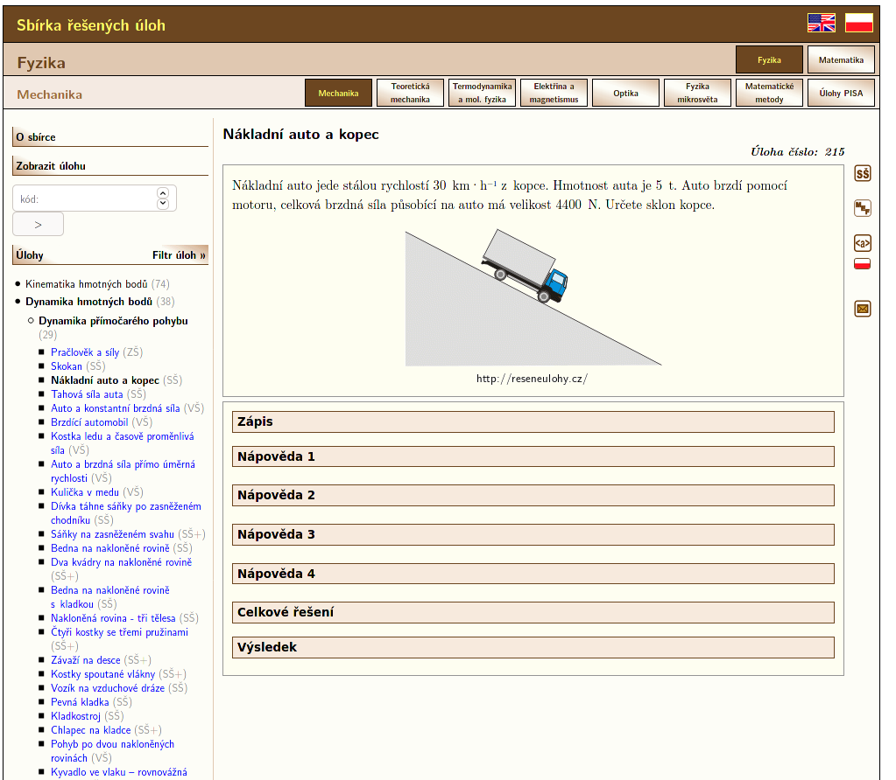

FyChKulačka
Tohle je naše aplikace
dokáže úplně všechno
dokáže úplně všechno
vytváření databáze
vytváření databáze
vytváření databáze
def get_problem_statement(link):
r = requests.get(link)
html = r.content
soup = BeautifulSoup(html, "html5lib")
statement = soup.find("div", attrs={"class": "taskSetup"})
.findAll("p")
statement_text = " | "
.join([paragraph.text for paragraph in statement])
return statement_text
vytváření databáze
0 http://reseneulohy.cz/762/housenka Na obrázku je zaznamenaná stopa housenky s časovými údaji, kdy kde byla. | >
1 http://reseneulohy.cz/226/auto,-chodec,-cyklista---grafy-s,-v Auto, chodec a cyklista se pohybují po stejné sil>
2 http://reseneulohy.cz/15/pohyb-dany-graficky-i Na obrázku jsou grafy závislosti dráhy na čase přímočarých pohy>
3 http://reseneulohy.cz/136/vytah Na obrázku je zakreslena časová závislost x(t) polohy kabiny výtahu. | a) P>
4 http://reseneulohy.cz/134/pohyb-dany-graficky-ii Grafy na obrázcích: | a) Považujte za průběhy souřadnice x(t) >
5 http://reseneulohy.cz/135/pohyb-dany-graficky-iii Kruhový kotouč se otáčí s úhlovým zrychlením ε, jehož závislo>
6 http://reseneulohy.cz/137/prumerna-rychlost-auta-i Rychlost auta v prudkém stoupání je 30 km·h−1. V následují>
7 http://reseneulohy.cz/227/prumerna-rychlost-auta-ii Spěchající motorista se snaží překonat kopec. Stoupání i kl>
8 http://reseneulohy.cz/17/anicka-na-vylete Anička si vyjela na kole na výlet. Nejprve stoupala do kopce přibliž>
9 http://reseneulohy.cz/219/hajny-a-pes Představme si hajného, který se vrací z obchůzky po lese a jde stálou r>
10 http://reseneulohy.cz/104/pozorovani-letadla Ve vzdálenosti 1 m od okna širokého 50 cm sleduje pozorovatel l>
podobnostní koeficient
Automobilista prošel první třetinu dráhy a měl rychlost v1, další dvě třetiny měl rychlost v2 = 72 km.h-1. Průměrnou rychlost měl 36 km.h-1. Vypočtěte v1!
Automobilista prošel první třetinu dráhy a měl rychlost v1, další dvě třetiny měl rychlost v2 = 72 km.h-1. Průměrnou rychlost měl 36 km.h-1. Vypočtěte v1!
Automobilista prošel první třetinu dráhy a měl rychlost v1, další dvě třetiny měl rychlost v2 = 72 km.h-1. Průměrnou rychlost měl 36 km.h-1. Vypočtěte v1!
Rychlost auta v prudkém stoupání je 30 km·h−1. V následujícím stejně dlouhém sjezdu jede rychlostí 90 km·h−1. Určete, jak velká je průměrná velikost rychlosti auta.
Rychlost auta v prudkém stoupání je 30 km·h−1. V následujícím stejně dlouhém sjezdu jede rychlostí 90 km·h−1. Určete, jak velká je průměrná velikost rychlosti auta.
Raketa, co měla modrý pruh a měla silný motor, dosáhne druhou kosmickou rychlost 11 km.s-1 po ujetí dráhy 200 km. Za jaký čas to dosáhne? Jaké je její zrychlení?
Raketa, co měla modrý pruh a měla silný motor, dosáhne druhou kosmickou rychlost 11 km.s-1 po ujetí dráhy 200 km. Za jaký čas to dosáhne? Jaké je její zrychlení?
Raketa, co měla modrý pruh a měla silný motor, dosáhne druhou kosmickou rychlost 11 km.s-1 po ujetí dráhy 200 km. Za jaký čas to dosáhne? Jaké je její zrychlení?
Uvažujme elektron, jehož průmět spinu do směru osy x je záporný. Vypočítejte pravděpodobnost, že měl kladnou, hodnotu průmětu spinu do směru (1,0,1).
Uvažujme elektron, jehož průmět spinu do směru osy x je záporný. Vypočítejte pravděpodobnost, že měl kladnou, hodnotu průmětu spinu do směru (1,0,1).
Uvažujme elektron, jehož průmět spinu do směru osy x je záporný. Vypočítejte pravděpodobnost, že měl kladnou, hodnotu průmětu spinu do směru (1,0,1).
TF-IDF
TF-IDF
\[\frac{\qquad\qquad\qquad\qquad\qquad}{\text{}}\]
\[\frac{\text{frekvence slova v příkladu}}{\text{}}\]
\[\frac{\text{frekvence slova v příkladu}}{\text{frekvence slova napříč příklady}}\]
Automobilista prošel první třetinu dráhy a měl rychlost v1, další dvě třetiny měl rychlost v2 = 72 km.h-1. Průměrnou rychlost měl 36 km.h-1. Vypočtěte v1!
Automobilista prošel první třetinu dráhy a měl rychlost v1, další dvě třetiny měl rychlost v2 = 72 km.h-1. Průměrnou rychlost měl 36 km.h-1. Vypočtěte v1!
Automobilista prošel první třetinu dráhy a měl rychlost v1, další dvě třetiny měl rychlost v2 = 72 km.h-1. Průměrnou rychlost měl 36 km.h-1. Vypočtěte v1!
TF-IDF
počet měl v databázi: 33
\[\frac{3}{33} = 0.09\]
počet rychlost v databázi: 338
\[\frac{3}{338} = 0.008\]
Náš přístup
Náš přístup
\[\frac{\text{frekvence slova v příkladu}}{\text{}}\]
\[\frac{\text{frekvence slova v příkladu}}{\text{frekvence slova v korpusu}}\]
1 a 2888276 2902999 1043349 1032997 826654
2 se 2460596 2471105 1074718 681327 715060
3 na 1713721 1721220 600937 515231 605052
4 v 1654118 1662427 399727 616443 646257
5 je 1062474 1068193 286008 421948 360237
6 že 940618 944636 400445 262321 281869
7 to 865165 868192 431721 175614 260858
8 s 761126 764887 242118 268268 254501
9 z 653892 656928 202728 215496 238703
10 do 647272 650021 252594 183307 214121
11 si 623725 625846 326063 118968 180815
Náš přístup
počet měl v databázi: 85834
\[\frac{3}{85834} = 0.0000349\]
počet rychlost v databázi: 6317
\[\frac{3}{338} = 0.000474\]
Porovnání
Vztah mezi jednotkou a vzorcem
\[ E = \frac{1}{2}mv^2 \] \[ E = \frac{1}{2}m\left(\frac{s}{t}\right)^2 \]Vztahy mezi jednotkami

Chemie
- vyčíslovat rovnice
- pojmenovávat chemické látky
- organické
- anorganické
Anorganické názvosloví
CaCO3
uhličitan vápenatý
Vzor oxidu (zjednodušený)
/[A-Z][a-z]?[0-9]?O[0-9]?/
velké písmeno, možná malé písmeno, možná číslice, písmeno O, možná číslice
Vzor oxidu (důležité informace)
/([A-Z][a-z]?)([0-9]?)O([0-9]?)/
prvek kationtu, počet prvků kationtu, počet kyslíků
Výpočet oxidačního čísla
\[\mathrm{Al}^{n}_2\mathrm{O}^\mathrm{-II}_3 \Rightarrow 2 \cdot n - 3 \cdot (-2) = 0 \Rightarrow n = \mathrm{+III}\]
Sestavení názvu
H, C, +II, kyslíkatá sůl, Na, +I
hydrogen- + uhlík + -ičitý + -an + sodík + -ný
hydrogenuhličitan sodný
Triviální název
H2O
oxid vodný
voda
oxidan
Organické názvosloví
CIR (Chemical Identifier Resolver) od nci.nih.gov
OSRA (Optical Structure Recognition Application) od nci.nih.gov
Převod obrázku na SMILES
↓
OSRA
↓
CCCCO
Převod SMILES na název
C1CCCCC1C
↓
CIR
↓
methylcyclohexane
methylcyclohexane
↓
překladač
↓
methylcyklohexan
Vyčíslování rovnic
CO2 + H2O → C6H12O6 + O2
\[ \begin{bmatrix} \mathrm C: & 1 & 0 & -6 & 0 \\ \mathrm O: & 2 & 1 & -6 & -2 \\ \mathrm H: & 0 & 2 & -12 & 0 \\ \end{bmatrix} \cdot \mathbf{x} = \begin{bmatrix} 0 \\ 0 \\ 0 \end{bmatrix} \]
\[\mathbf{x} = \begin{bmatrix} 6 & 6 & 1 & 6 \end{bmatrix}\]
6 CO2 + 6 H2O → C6H12O6 + 6 O2